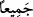

Burada, ne kadar çok olursa olsun, isterse kum taneleri, yapraklar, yıldızlar ve
benzerleri sayısınca olsun, büyük-küçük tüm günahların bağışlanacağına dâir bir vaad
söz konusudur. Ancak bu genellik, husûsî bir anlam taşımaktadır. Çünkü şirkin bu âyete
dâhil olmadığı icmâ ile sâbittir. Bu hüküm, isyankârlar hakkında da Allah’ın dilemesine
bağlıdır. Çünkü mutlak mukayyede hamledilir. Âyetle ilgili diğer yorumlar ileride
gelecektir.
Hz. Peygamber (s.a.) şöyle buyurmuştur: “Şüphesiz Allah bütün günahları bağışlar
ve hiç aldırmaz. Çünkü O, çok bağışlayan çok esirgeyendir.”[131] Yine O (a.s.) şöyle
der: “Allahım! Şayet bağışlayacaksan, herkesi bağışla senin hangi kulunun günahı
yoktur ki?”[132]
Afv ve mağfiret arasındaki fark şudur: Affın gerçek mânâsı “Şüphesiz iyilikler
kötülükleri siler.” (Hûd, 11/114) âyetinde işâret edildiği üzere ‘silmek’tir. “İşte Allah
bunların kötülüklerini iyiliğe çevirecektir!” (el-Furkân, 25/70) âyetinde işâret
edildiği üzere ‘değiştirmek’tir ki bu da mağfiret makamındandır. Bunu Şeyh-i Kebîr
(Konevî) Şerhu’l-erbaîne hadîsen adlı eserinde dile getirmiştir.
Cenab-ı Hak daha sonra bağışlamasının illetini beyân etmek üzere şöyle buyuruyor:
“Şüphesiz ki” sadece “O, çok bağışlayan, çok esirgeyendir.” İlk sıfat azâbı gerektiren
suçların silineceğine, ikincisi ise lütfundan olarak sevablar verileceğine işârettir. Bu iki
sıfatın böyle mübâlağa siygasıyla gelmesi, hem günahların hem de bağışlanıp
affedileceklerin çok olmasından dolayıdır.
Üstad Kuşeyrî (k.s.) der ki: “Ey kullarım” diye hitap edilmesi bir övgüdür, onların
‘haddi aşmakla’ vasfedilmesi ise yergidir. Allah Teâlâ “ey kullarım” buyurunca,
itâatkârlar âyetin kendilerini kasdetmiş olmasını arzulayarak başlarını kaldırırlar.
İsyânkârlar ise: “Biz kimiz ki Rabbimiz bize böyle bir övgüde bulunsun!” diyerek
başlarını eğerler. Cenab-ı Hak “kendi nefisleri aleyhine haddi aşanlar” buyurunca
durum değişir. Başlarını öne eğenler doğrulup zilletleri sona ererken başlarını
kaldıranlar öne eğerler ve atılganlıkları sona erer. Sonra “kendi nefisleri aleyhine”
ifâdesinden dolayı umutları güçlenir. Yâni, aşırı gittiysen kendi nefsin aleyhine aşırı
gittin, Allah’ın rahmetinden ümid kesme. Kapımıza gelip gitmeyi kestiysen bâri gönlünü
Bizden çevirme!”
“
”un elif-lâm’ı istiğrâk ve genellik ifâde eder. “
” da bunun te’kididir. Allah
Teâlâ sanki şöyle buyurmaktadır: Bağışlarım bırakmam, affederim bırakmam. Çok
sayıda günahınız olsa da benim sizin için ezelî inâyetim var.
Keşfü’l-esrâr’da der ki: “Bil ki Allah’ın yarattıklarından kerâmet sâhibi iki grup
vardır. Biri melekler, diğeri insanlardır. Bu yüzden nebî ve rasüller başkalarından değil
onlardan kılındı. Onların şerefinin derecesi iki şeydedir: Ubudiyyet ve muhabbet. Tam
kulluk meleklerin sıfatıdır. Ubudiyyet ve muhabbet her ikisi de insanların sıfatıdır.
Meleklere sadece kulluğu verdi ki halkın sıfatıdır. İnsanlara ubûdiyetten sonra muhabbet
hil’atini verdi ki Hakk’ın sıfatıdır. Bu ümmet hakkında şöyle buyurur: “Allah onları